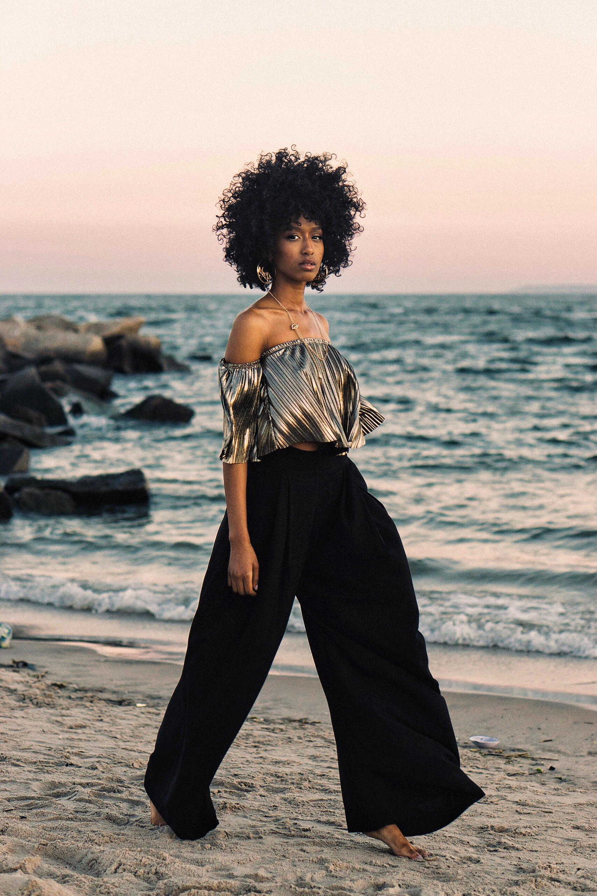

Tahiry Bah has been strutting with modeling as her passion, for the past 6 years. Her African beauty and her curvy body has inspired many others to express theirselves and embrace the body they're in. New York born and Texas raised, and of Guinean and Rwandese descent, she has paved the way to becoming a dominant model in the fashion industry with no representation.
Tahiry has booked huge gigs and has built her brand from the ground up. This rising model is on her way to the top and who knows what's next on her agenda. From interviews with well known blogs/magazines/companies, to slaying the runway, we are excited to see her success grow. She is a headstrong competitor and will make a statement in the fashion industry. Stay tuned and watch her beautiful journey unravel.
Ebony Magazine. BuzzFeed. Vogue (online). ZoSkin Health Beauty. Cosign Magazine (Online).
Zen Magazine. Saint Heron. TeenVogue (Online). Selangie NYFW18. KidSuper NYFW17. Joey Bada$$.
A$AP Ferg. Kimi Kouture CosignMag Fashion Show. HanifaCo. Cotton Collection. Chen Burkett.
Future Business Inquries
email to: Info@tahirybah.com